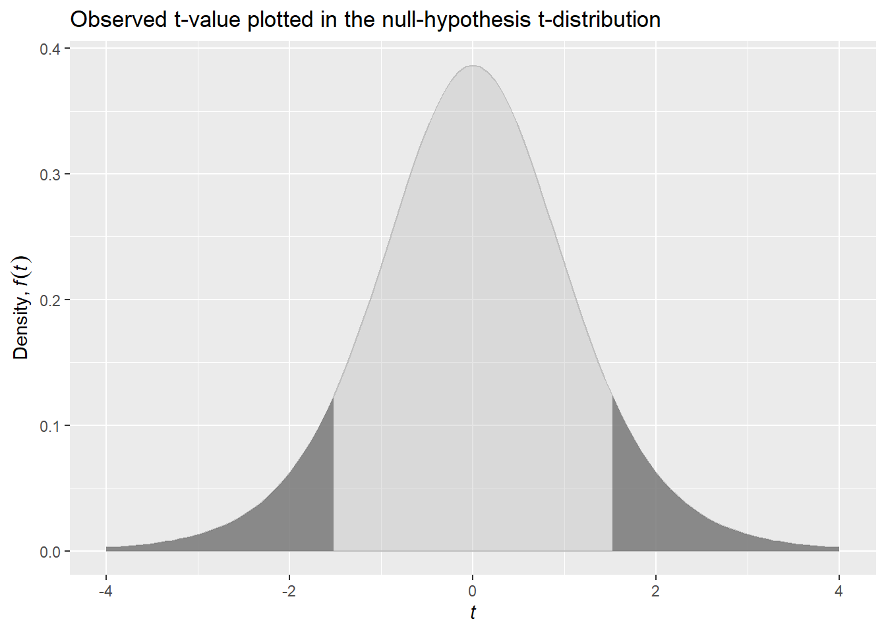

3Assignment 3: Drawing inference from statistical models, and statistical power
This assignment is set up as a statistical laboratory, we will perform simulations and your assignment is to interpret and explain the results. Create a report based on the code used in the lab and make sure you answer the specified questions (1-8). You can be as creative as you want and explore the results further.
The report should be handed in on canvas as a link to github repository containing a reproducible .Rmd (or qmd) file.
3.1 Setting up a simulation
In this assignment we will simulate a population of possible values, from this population we will draw random samples, calculate statistics and interpret them. The population of values can be regarded as the possible differences between two treatments in a cross-over study where participants have performed both treatments. The values in the population are calculate as \(Treatment - Control\).
We will simulate a population of one million numbers with a mean of 1.5 and a standard deviation of 3. We will make two different set of studies, one set with a sample size of 8 and one set with a sample size of 40. In order to be sure you replicate your results, include and run set.seed() before simulations in your final script.
We will use the lm function to estimate the average value of the population. We do this in an “intercept-only” model. This model can be written as
\[Y_i = \beta_0 + \epsilon_i\]
where \(\beta_0\) is the intercept and can be interpreted as the average value of \(Y\), our dependent variable. \(\epsilon\) is the error term, each observation (\(i\)) deviates from the intercept to some degree. If the intercept term is positive or negative we can interpret it as a difference between the two treatments (described above). This model is equivalent to a one-sample t-test. Let’s get started!
In the code chunk below, we will simulate the population of differences between treatments. We will then draw two random samples corresponding sample sizes of 8 and 40 and save these data in data frames with the dependent variable named y. We fit the very simple model y ~ 1 as a linear model and save the model object as m1 and m2.
library(tidyverse)set.seed(1)population <-rnorm(1000000, mean =1.5, sd =3)samp1 <-data.frame(y =sample(population, 8, replace =FALSE))samp2 <-data.frame(y =sample(population, 40, replace =FALSE))m1 <-lm(y ~1, data = samp1)m2 <-lm(y ~1, data = samp2)summary(m1)
Call:
lm(formula = y ~ 1, data = samp1)
Residuals:
Min 1Q Median 3Q Max
-6.5322 -1.2523 -0.0883 1.3540 4.8692
Coefficients:
Estimate Std. Error t value Pr(>|t|)
(Intercept) 1.840 1.251 1.47 0.185
Residual standard error: 3.539 on 7 degrees of freedom
The results from a simple model can be calculated by hand. The Estimate corresponds to the average of all values in the sample, from the smaller sample, samp1 we can do mean(samp1$y). This average should correspond to coef(m1) which should be 1.84. The variation of the data is most often described with the standard deviation (SD). The SD of y in the smaller sample is sd(samp1$y) (corresponding to 3.539). However, the regression table (summary(m1)) show you the standard error (SE). This statistic is an attempt to estimate the variation in a hypothetical distribution of means. The standard error is (in this simple case) \(SE_y = \frac{SD_y}{\sqrt{n}}\). Calculating by hand using the data in samp1 we would do sd(samp1$y)/sqrt(8). Amazingly this corresponds to 1.251!
By using the estimate 1.84 and the corresponding SE (1.251) we can calculate the t-value as the ratio \(\frac{Estimate}{SE}\). The t-value may in turn be used to determine the are under the curve of a t-distribution. The t-value from the above calculation is 1.4702611. Using our single \(n=8\) study, we estimate that values of t, as extreme or even more extreme as our observed value both above and below 0, would occur in 18.5% of studies if the null-hypothesis was true. This corresponds to a p-value of 0.185. The figure below shows a graphical representation of a t-value distribution under the assumption that the null-hypothesis is true.

A t-distribution estimated from model m1 with the shaded area corresponding to the observed p-value.
In light of what you know now about the process of conducting a study with a random sample, use your own words and…
Explain the estimate, SE, t-value, and p-value from the regression models that we created previously (m1 and m2).
Discuss what contributes to the different results in the two studies (m1 and m2).
Why do we use the shaded area in the lower and upper tail of the t-distribution (See Figure @ref(fig:t-dist-fig)).
3.2 Many studies
Below we will perform 1000 studies and save the results from each study. This will make it possible for us to get an actual sampling distribution. Copy the code to your own document to run the experiment.
# Create data frames to store the model estimatesresults_8 <-data.frame(estimate =rep(NA, 1000), se =rep(NA, 1000), pval =rep(NA, 1000), n =8) results_40 <-data.frame(estimate =rep(NA, 1000), se =rep(NA, 1000), pval =rep(NA, 1000), n =40)# A for loop used to sample 1000 studies, each iteration (i) will draw a new sample# from the population. for(i in1:1000) {# Draw a sample samp1 <-data.frame(y =sample(population, 8, replace =FALSE)) samp2 <-data.frame(y =sample(population, 40, replace =FALSE))# Model the data m1 <-lm(y ~1, data = samp1) m2 <-lm(y ~1, data = samp2)# Extract values from the models results_8[i, 1] <-coef(summary(m1))[1, 1] results_8[i, 2] <-coef(summary(m1))[1, 2] results_8[i, 3] <-coef(summary(m1))[1, 4] results_40[i, 1] <-coef(summary(m2))[1, 1] results_40[i, 2] <-coef(summary(m2))[1, 2] results_40[i, 3] <-coef(summary(m2))[1, 4]}# Save the results in a combined data frameresults <-bind_rows(results_8, results_40)
Using the results data frame…
Calculate the standard deviation of the estimate variable, and the average of the se variable for each of the study sample sizes (8 and 40). Explain why these numbers are very similar. How can you define the Standard Error (SE) in light of these calculations?
Create a histogram (see example code below) of the p-values from each study sample-size. How do you interpret these histograms, what do they tell you about the effect of sample size on statistical power?
Calculate the number of studies from each sample size that declare a statistical significant effect (specify a threshold for \(\alpha\), your significance level).
Using the pwr package, calculate the power of a one-sample t-test, with a effect size of 1.5/3, your specified significance level and sample sizes 8 and 40. Explain the results in the light of your simulations.
# Example code for copy and paste# A two facets histogram can be created with ggplot2results %>%ggplot(aes(pval)) +geom_histogram() +facet_wrap(~ n)# Count the proportion of tests below a certain p-value for each results %>%filter(pval <0.05) %>%group_by(n) %>%summarise(sig_results =n()/1000)# Using the pwr packagelibrary(pwr)pwr.t.test(n =40, sig.level =0.05, d =1.5/3, type ="one.sample")
3.3 Many studies without population effect
We will now simulate a population without differences between treatment and control. The code below is very similar to the one we use above, except that we use an average effect of 0 in the population.
population <-rnorm(1000000, mean =0, sd =3)# Create data frames to store the model estimatesresults_8 <-data.frame(estimate =rep(NA, 1000), se =rep(NA, 1000), pval =rep(NA, 1000), n =8) results_40 <-data.frame(estimate =rep(NA, 1000), se =rep(NA, 1000), pval =rep(NA, 1000), n =40)# A for loop used to sample 1000 studies, each iteration (i) will draw a new sample# from the population. for(i in1:1000) {# Draw a sample samp1 <-data.frame(y =sample(population, 8, replace =FALSE)) samp2 <-data.frame(y =sample(population, 40, replace =FALSE))# Model the data m1 <-lm(y ~1, data = samp1) m2 <-lm(y ~1, data = samp2)# Extract values from the models results_8[i, 1] <-coef(summary(m1))[1, 1] results_8[i, 2] <-coef(summary(m1))[1, 2] results_8[i, 3] <-coef(summary(m1))[1, 4] results_40[i, 1] <-coef(summary(m2))[1, 1] results_40[i, 2] <-coef(summary(m2))[1, 2] results_40[i, 3] <-coef(summary(m2))[1, 4]}# Save the results in a combined data frameresults_null <-bind_rows(results_8, results_40)
Using the new data frame with results from studies of a population with an average effect of zero, create new histograms.
With a significance level of 5%, how many studies would give you a “false positive” result if you did many repeated studies?